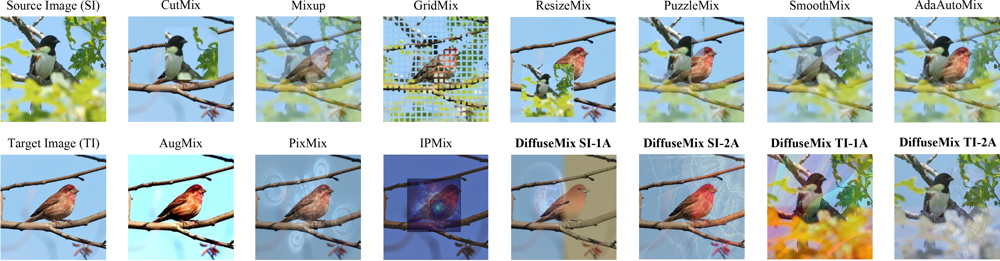
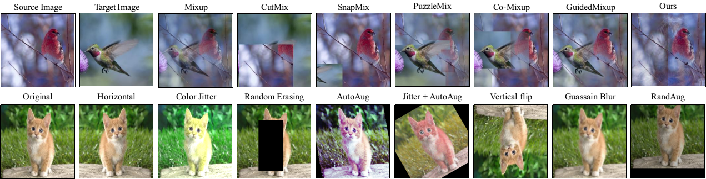
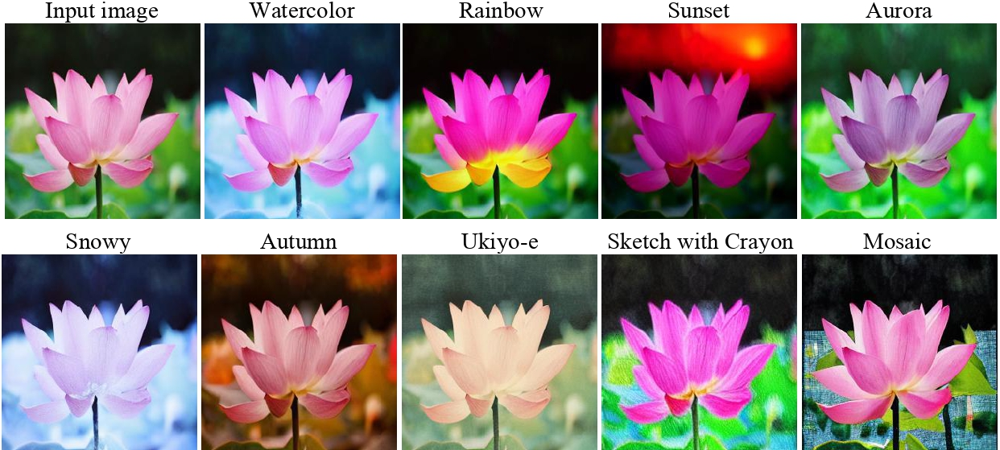
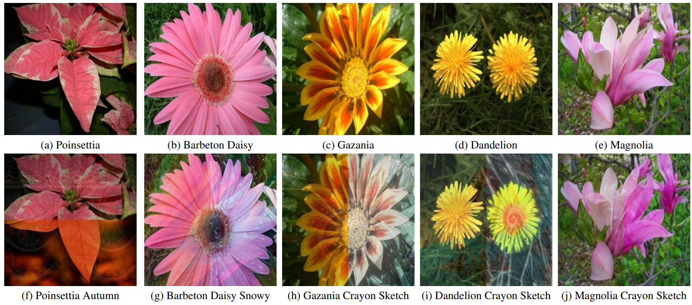
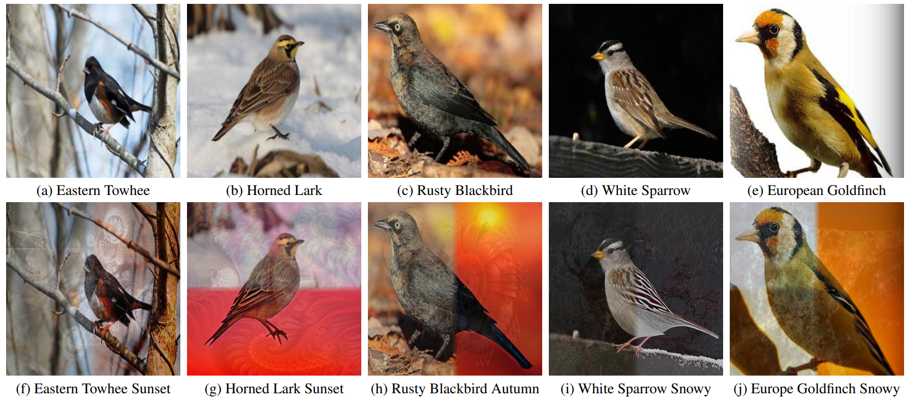
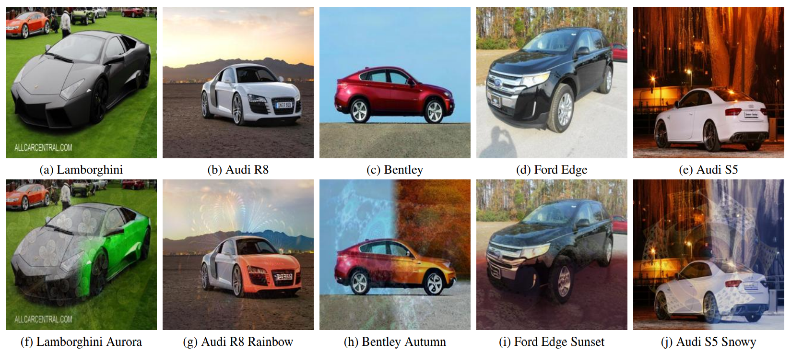
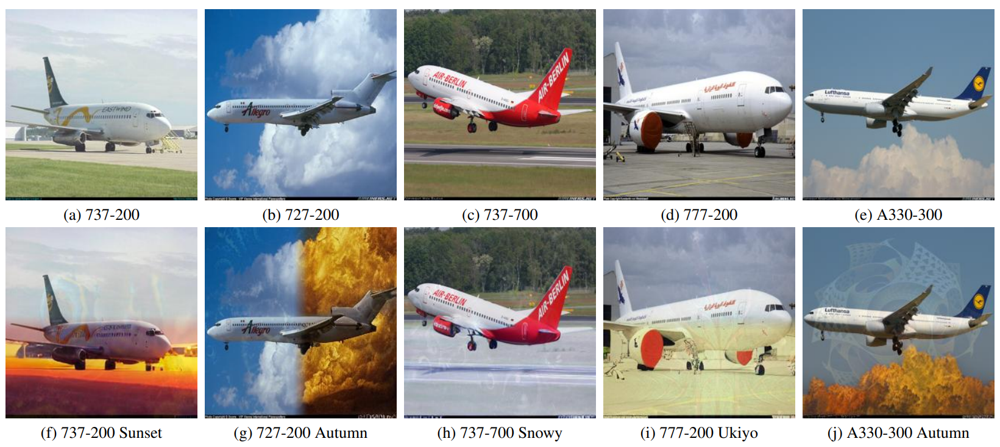

DiffuseMix: Label-Preserving Data Augmentation with Diffusion Models
Khawar Islam1,
Muhammad Zaigham Zaheer2,
Arif Mahmood3,
Karthik Nandakumar2
1FloppyDisk.AI,
2Mohamed bin Zayed University of Artificial Intelligence,
3Information Technology University, Lahore, Pakistan

For each input image DiffuseMix combines natural and generated image obtained from bespoke conditional prompts
[arXiV Paper]
[Stanford Cars]
[Supplementary]
[Code]
[Poster]
[Video]
[BibTeX]
Abstract
Recently, a number of image-mixing-based augmentation techniques have been introduced to improve the generalization of deep neural networks.
In these techniques, two or more randomly selected natural images are mixed together to generate an augmented image.
Such methods may not only omit important portions of the input images but also introduce label ambiguities by mixing images across labels resulting in misleading supervisory signals.
To address these limitations, we propose DiffuseMix, a novel data augmentation technique that leverages a diffusion model to reshape training images, supervised by our bespoke conditional prompts.
First, concatenation of a partial natural image and its generated counterpart is obtained which helps in avoiding the generation of unrealistic images or label ambiguities.
Then, to enhance resilience against adversarial attacks and improves safety measures, a randomly selected structural pattern from a set of fractal images is blended into the concatenated image to form the final augmented image for training.
Our empirical results on seven different datasets reveal that DiffuseMix achieves superior performance compared to existing state-of-the-art methods on tasks including general classification, fine-grained classification, fine-tuning, data scarcity, and adversarial robustness.
Background
The top row represents mixup methods, which blend source and target images. For instance, traditional methods like CutMix and MixUp modify training images by pasting sections or blending images, respectively, along with their labels. These techniques may result in label ambiguity and remain vulnerable to the elusive threats of adversarial attacks. The second row illustrates automated data augmentation methods that include basic transformations applied on the source images directly. These methods avoid label ambiguity, however, offer limited performance gain. The goal of DiffuseMix is to eraticate label ambiguity while demonstrating better generlization and protection against adversarial attacks.

Method
The proposed DiffuseMix is an effective data augmentation technique which can be used to enhance the robustness and generalization of the deep learning models. Formally, \( I_i \in \mathbb{R}^{h\times w \times c} \) is an image from the training dataset, \( \mathcal{D}_{\text{mix}}(\cdot): \mathbb{R}^{h\times w \times c} \to \mathbb{R}^{h\times w \times c} \) denotes our data augmentation method. To obtain the final augmented image \( A_{ijuv} \), input image \( I_i \) goes through proposed generation using prompt \( p_j \), concatenation using mask \( M_u \), and blending using fractal image \( F_v \). The overall augmentation process can be represented as \( A_{ijuv} = \mathcal{D}_{\text{mix}}(I_i, p_j, M_u, F_v, \lambda) \).

Textual Prompt Selection
In order to ensure that only appropriate prompts are applied, a bespoke textual library of filter-like global visual effects is predefined: 'autumn', 'snowy', 'sunset', 'watercolor art', 'rainbow', 'aurora', 'mosaic','ukiyo-e', and 'a sketch with crayon'. These prompts are selected because of their generic nature and are applicable to a wide variety of images. Secondly, these do not alter the image structure significantly while producing a global visual effect in the image. Each prompt in the textual library is appended with a template 'A transformed version of image into prompt' to form a particular input to the diffusion model. Examples of images generated through these prompts are shown in below figure. More visual examples and discussion on prompt selection are provided in Supplementary Section 3 of our manuscript..

Oxford Flower102
Illustration of original training images and DiffuseMix augmented images from the Oxford Flower102 dataset. First row: showcases original, unaltered images of various flowers, including poinsettia, barbeton daisy, gazania, dandelion, and Magnolia classes. Second row: illustrates the transformative effects of the DiffuseMix augmentation method. The effects of our custom-tailored prompts-based generation are visible on the generated portion of each image. Overall, DiffuseMix results in a diverse array of images with sufficient structural complexity and diversity to train robust classifiers.

Caltech-UCSD Birds-200-2011 (CUB-200-2011)
Original and DiffuseMix augmented bird images from the Caltech-UCSD Birds-200-2011 dataset. Top row: displays a selection of original, high-resolution bird images, capturing the natural beauty and diversity of species such as the eastern towhee, horned lark, rusty blackbird, white sparrow, and european goldfinch. Bottom row: demonstrates the augmented images obtained using DiffuseMix. The augmented images are visually striking and contextually varied representations of the original subjects.

Stanford Cars
First row: showcases original images from the Stanford Cars benchmark dataset, featuring unaltered depictions of various car models including a lamborghini, audi R8, bentley, ford edge and audi S5. Second row: presents the images transformed using our DiffuseMix method. The effects of prompts are visible in the generated portions of the images. For example, lamborghini is changed to green when the aurora prompt is applied, creating a vibrant image. The front side of audi R8 becomes more color-rich when it is generated with the rainbow prompt. The ambiance (background context) of bentley transforms significantly when the autumn prompt is used. Similar diverse transformations are observed in other examples. These augmented images demonstrate the capability of DiffuseMix in generating visually enriched augmented images for better generalization.

FGVC-Aircraft
Illustration of original and DiffuseMix augmented Aircraft images from the FGVC-Aircraft benchmark dataset. Top row: presents original aircraft images, each portraying a distinct airplane including the 737-200, 727-200, 737-700, 777-200, and A330-300. These images highlight the design resemblance of various aircraft models, serving as a challenging resource for fined-grained image classification studies. Bottom row: showcases the augmented images obtained using DiffuseMix for each corresponding input image. As seen, the method reimagined each aircraft with our proposed prompts such as sunset, autumn, snowy and ukiyo resulting in a rich visual appearance with diverse contexts. This also illustrates how image augmentation can be used to simulate different environmental and stylistic scenarios, potentially enhancing the robustness and versatility of the dataset for training robust neural networks.

BibTeX
@inproceedings{islam2024diffusemix,
title={DiffuseMix: Label-Preserving Data Augmentation with Diffusion Models},
author={Islam, Khawar and Zaheer, Muhammad Zaigham and Mahmood, Arif and Nandakumar, Karthik},
booktitle={Proceedings of the IEEE/CVF Conference on Computer Vision and Pattern Recognition},
pages={27621--27630},
year={2024}
}
Acknowledgements:
We are thankful to Hamza Saleem and Shah Nawaz for the fruitful insights. We are also thankful to reviewers 5MBR, 5efz, RCMo and all Area Chairs.